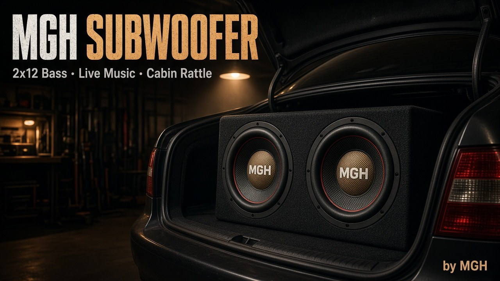

MGH Subwoofer
Бас в багажнике.
Кузов в такт.
Мод 2×12 для BeamNG.drive: свой плеер, Spotify и Яндекс без кабеля, живые диффузоры.
2×12 ящик
Apps плеер
ПК захват
XrTokito
Что внутри
Один мод — установка, звук и физика баса без лишних кабелей.
-
Живые диффузоры
Конусы ходят под низкие частоты, кузов и стёкла отвечают тряской.
-
Плеер в Apps
Локальные mp3, ogg и wav из папки subwoofer_music.
-
С ПК без кабеля
Spotify, Яндекс.Музыка или любое приложение через «Мост с ПК».
-
Позиция и тюнинг
Additional Modifications или слот номера, flip, ход и сила тряски.

Ставится как часть
Vehicle Config → Additional Modifications → Subwoofer. Либо universal-слот номерного знака.
Установка
Пять шагов. Без VB-Cable и без Python.
-
01
Скачай MGH_SUB_PACK.zip или solo-архив и положи zip в папку mods BeamNG без распаковки.
-
02
Включи мод в менеджере модификаций и полностью перезапусти игру.
-
03
Поставь саб в Vehicle Config, открой Apps → MGH Subwoofer.
-
04
Файлы: треки в
subwoofer_music. ПК: запусти «Мост с ПК.exe», выбери приложение во вкладке «С ПК».
MGH Subwoofer
Скачать v1.1.7
Готовый набор с мостом или только мод. Автор: XrTokito.